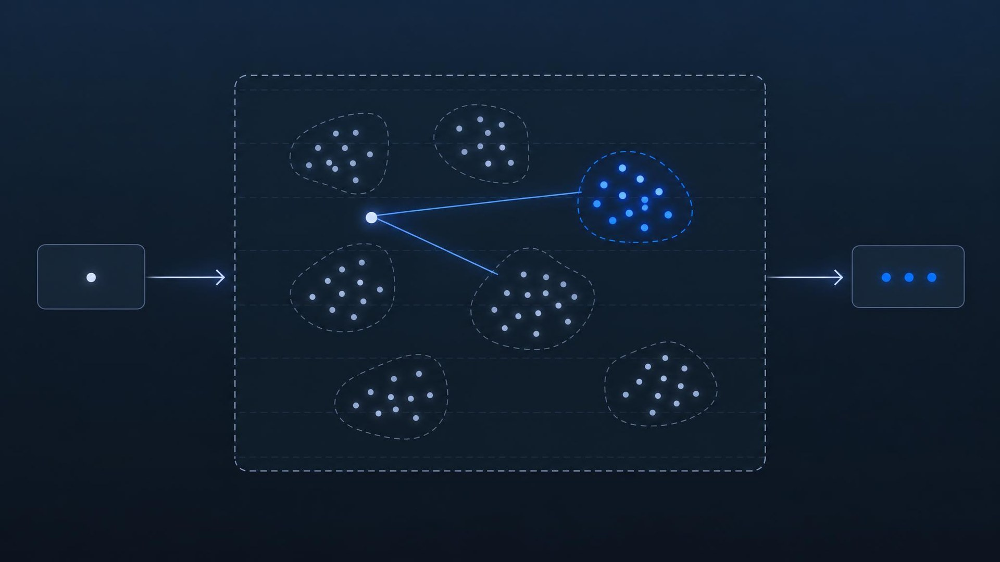

Pinecone 发布 pg_pinecone：在 Postgres 中实现原生高性能向量检索
Pinecone Releases Pg_pinecone, an Open-Source Postgres Search Extension

文章背景与核心概要
随着检索增强生成 (Retrieval-Augmented Generation, RAG) 与各类 AI 智能体应用的爆发，如何在传统关系型数据库中低成本、高效率地管理与检索海量高维向量数据，成为了现代数据架构领域的关键命题。尽管主流的 pgvector 扩展提供了基础的向量检索能力，但在面对海量数据集时，基于图拓扑的 HNSW 索引往往面临显存与磁盘占用过大、带条件过滤查询 (Filtered Search) 召回率和延迟急剧劣化的痛点。针对这一工程瓶颈，知名向量数据库厂商 Pinecone 正式开源了基于 Apache 2.0 协议的 Postgres 扩展插件 pg_pinecone。该插件创新性地在 Postgres 内部引入了基于 RaBitQ 量化算法的倒排文件索引架构，使得 100 万条 768 维向量的索引体积压缩至仅 136 MB，比传统 HNSW 缩减数十倍，并彻底解决了预过滤与后过滤的性能与准确率两难困境。此外，pg_pinecone 提供了原生引擎、Pgvector 引擎和托管远程引擎三种模式，帮助开发者无缝实现从单机本地轻量开发到云端无服务器海量扩展的平滑过渡。
概要
Summary
2026 年 10 月 27 日，Pinecone 正式开源了遵循 Apache 2.0 协议的 Postgres 搜索扩展插件 pg_pinecone。该扩展能够直接与现有的 pgvector 向量列深度集成，提供高效率的向量检索 (Vector Search) 能力。根据官方发布的基准测试，对于 100 万条 768 维度的向量，其原生索引所需的存储空间仅为 136 MB——其空间利用效率显著超越了以 HNSW 为代表的传统图基索引。pg_pinecone 旨在将数据完全保留在 Postgres 内部的同时，彻底解决带条件过滤检索常见的不准确问题；它提供了三种差异化的执行引擎（原生引擎、Pgvector 引擎以及远程引擎），支持应用从本地开发环境平滑过渡并扩展至云端托管的无服务器 (Serverless) 基础设施。
On October 27, 2026, Pinecone released
pg_pinecone, an open-source Postgres search extension licensed under Apache 2.0. The extension integrates high-efficiency vector search capabilities directly with existingpgvectorcolumns. In company-reported benchmarks, its native index for 1 million 768-dimension vectors requires only 136 MB of storage—significantly outperforming traditional graph-based index sizes like HNSW. Designed to maintain data fully inside Postgres while resolving accuracy issues typical of filtered searches,pg_pineconeoffers three distinct engines (Native, Pgvector, and Remote) to scale smoothly from local development to cloud-managed serverless infrastructure.
单一索引背后的三套执行引擎
Three Engines Behind One Index
pg_pinecone 能够与现有的 pgvector 向量列无缝协作。应用程序可以完全按照常规方式连接到 Postgres，并执行标准 SQL 查询（例如 ORDER BY embedding <=> $1 LIMIT 10）。由于原始数据表和完整高维向量仍然保存在数据库内部，Postgres 继续充当最根本的权威数据源记录系统 (System of Record)。
pg_pineconeworks seamlessly with vector columns already held inpgvector. Applications connect to Postgres normally and issue standard SQL queries (such asORDER BY embedding <=> $1 LIMIT 10), leaving tables and full vectors in place so that Postgres remains the system of record.
每个数据库表都可以选择使用以下三种专用引擎之一：
- 原生引擎 (Native Engine, 默认配置)：完全在 Postgres 内部构建索引并执行搜索，不需要注册 Pinecone 账号、配置 API 密钥或发出任何外部网络请求。
- Pgvector 引擎 (Pgvector Engine)：直接搜索既有的
pgvector索引（如 HNSW 或 IVFFlat），非常适合那些已建好索引且无需复杂条件过滤的现有数据表。 - 远程引擎 (Remote Engine)：将检索操作卸载分流至 Pinecone 托管服务中的无服务器索引，专为单个 Postgres 数据库服务器无法承载的超大规模负载而量身定制。
Each database table can utilize one of three specialized engines: * Native Engine (Default): Builds and searches its index entirely inside Postgres without requiring a Pinecone account, API keys, or external network calls. * Pgvector Engine: Searches an existing
pgvectorindex (HNSW or IVFFlat), making it ideal for pre-indexed tables that do not require filtering. * Remote Engine: Offloads search operations to a serverless index in Pinecone’s managed service, tailored for workloads that have outgrown a single Postgres server.
只需调用一次 pinecone.set_engine()，即可在不同的引擎之间无缝切换数据表。这一过程完全不会改动上层的业务查询逻辑，并且整个操作是完全可逆的。
Switching a table between engines requires a single call to
pinecone.set_engine(), keeping queries unchanged and fully reversible.
原生引擎的检索工作机制
How the Native Engine Searches
与 pgvector 的 HNSW 类似，原生引擎同样采用了近似最近邻 (Approximate Nearest Neighbor, ANN) 算法；不同之处在于，它抛弃了传统的图结构，转而采用一种对相似向量进行聚类分组的倒排文件索引 (Inverted File Index)。
Like
pgvector's HNSW, the native engine employs an approximate nearest neighbor algorithm, but replaces traditional graphs with an inverted file index that clusters similar vectors.
核心架构与 RaBitQ 量化技术
Core Architecture & RaBitQ Quantization
每个向量都会被压缩并存储为一个量化的 RaBitQ 编码——其尺寸约为每个维度仅占用 1 个比特，外加少量的校正值（该技术基于 Gao 和 Long 发表在 SIGMOD 2024 上的学术研究成果）。每个聚类簇内部的编码在物理存储上是连续紧凑排列的，这使得检索操作仅需连续读取少量的磁盘页，而无需在复杂的图拓扑结构中漫无目的地随机跳转寻道。
Each vector is stored as a quantized RaBitQ code—approximately one bit per dimension plus a few correction values (based on research by Gao and Long, SIGMOD 2024). Cluster codes are packed contiguously, allowing searches to read a few contiguous pages instead of randomly jumping across a graph structure.
查询检索的执行流程主要分为以下三个步骤：
- 探测最近聚类簇 (Probe Nearest Clusters)：将用户输入的查询向量与每个聚类簇的质心 (Centroid) 进行比对，筛选出空间上最接近的候选簇。
- 快速距离预估 (Estimate Distance)：利用每行数据紧凑的 RaBitQ 编码高效估算距离，初步保留最有潜力的 Top 候选结果。
- 精细重排 (Rerank)：调取数据表中存储的原始完整浮点向量，对候选集合重新精确计算真实距离并完成最终排序。
Searches execute in three steps: 1. Probe Nearest Clusters: Compare the query vector against each cluster's centroid. 2. Estimate Distance: Compute an estimated distance for each row using its RaBitQ code to retain top candidates. 3. Rerank: Finalize candidate scoring using the full vectors stored in the table.
深度融合的条件过滤技术
Advanced Filtering Integration
传统的 HNSW 后过滤 (Post-filtering) 机制通常先检索出最近邻向量，然后再套用 SQL 中的 WHERE 条件进行筛选。当过滤条件非常严苛时，绝大多数近邻候选都会被直接过滤丢弃，从而迫使系统陷入开销极其高昂的循环迭代扫描。
Traditional HNSW post-filtering evaluates nearest neighbors first and applies
WHEREclauses afterward, often discarding most candidates on narrow filters and forcing costly iterative scans.
为了化解这一难题，原生引擎在构建索引时，会将用于过滤的列值直接与每行向量的量化编码并排存储，并统计各行属性的频次分布：
- 预过滤 (Pre-filtering)：对于严苛的狭窄过滤条件（默认筛选结果占总数据行数的 3% 或更少），引擎直接跨所有聚类簇遍历扫描每一个符合条件的行，并使用全尺寸原始向量进行打分，从而保证精准无误的绝对召回。
- 单阶段过滤 (Single-stage filtering)：对于范围更宽泛的过滤条件，系统最多检索空间上最贴近的半数聚类簇，并在对簇内向量进行距离打分前先行验证过滤条件。
The native engine stores a filter-column value alongside each row's code and counts row frequencies at build time: * Pre-filtering: For narrow filters (defaulting to 3% of rows or fewer), it scans every matching row across all clusters and scores them with full vectors for exact results. * Single-stage filtering: For wider filters, it searches up to half of the nearest clusters and checks conditions within each cluster prior to scoring.
新插入的数据行会自动归入与其最接近的聚类簇，并立即可被检索。当发生大规模数据变更（例如批量导入使数据表体积翻倍）时，管理员可以通过手动运行 REINDEX 或开启自动维护策略，让引擎对各个聚类簇重新进行全局重平衡。
New inserts join the nearest cluster and become searchable immediately. For major updates (such as a bulk load that doubles the table size), running
REINDEXor enabling automatic maintenance rebalances the clusters.
Pinecone 官方基准测试表现
Benchmarks Reported by Pinecone
Pinecone 官方在包含 100 万条 wiki_dpr 向量（768 维）的数据集上，将原生引擎与 pgvector 的 HNSW 索引（包括全尺寸向量与 halfvec 半精度向量两种模式）进行了基准测试对比。测试环境部署在搭载了 PostgreSQL 17 与 18 的 AWS r6id.4xlarge 实例（配置为 16 个 vCPU、128 GB 内存）上。
Pinecone evaluated the native engine against
pgvector's HNSW index (using full-size vectors andhalfvec) on 1 millionwiki_dprvectors (768 dimensions). Tests were performed on an AWSr6id.4xlargeinstance (16 vCPUs, 128 GB RAM) running PostgreSQL 17 and 18.
- 索引存储占用 (Index Size)：
- 原生引擎：136 MB
- HNSW (
halfvec)：2.0 GB - HNSW (全尺寸向量)：4.1 GB
- 无过滤条件检索延迟 (Unfiltered Search Latency, \(k=10\) 下的 p50 延迟)：
- 原生引擎：召回率 0.95 时仅需 1.3 ms | 召回率 0.99 时为 2.3 ms
- HNSW (
halfvec)：召回率 0.95 时为 1.7 ms | 召回率 0.99 时为 4.7 ms - HNSW (全尺寸向量)：召回率 0.95 时为 2.7 ms | 召回率 0.99 时为 6.7 ms
- 带条件过滤检索表现 (Filtered Search Performance)：
- 10% 筛选比例：原生引擎在 12.3 ms 内达到了 1.000 的完美召回率（单阶段过滤），而 HNSW 借助多次迭代扫描，在 5.9 ms 内的最佳召回率仅为 0.920。
- 1% 筛选比例：原生引擎仅需 8.3 ms 即可实现 0.981 的高召回率。
- 索引构建耗时 (Build Times)：
- 原生引擎：45 秒
- HNSW (
halfvec)：62 秒 - HNSW (全尺寸向量)：79 秒
- Index Size:
- Native Engine: 136 MB
- HNSW (
halfvec): 2.0 GB- HNSW (Full-size): 4.1 GB
- Unfiltered Search Latency (p50 at \(k=10\)):
- Native Engine: 1.3 ms at 0.95 recall | 2.3 ms at 0.99 recall
- HNSW (
halfvec): 1.7 ms at 0.95 recall | 4.7 ms at 0.99 recall- HNSW (Full-size): 2.7 ms at 0.95 recall | 6.7 ms at 0.99 recall
- Filtered Search Performance:
- 10% Filter: Native engine reached 1.000 recall in 12.3 ms (single-stage), whereas HNSW reached 0.920 recall at best in 5.9 ms via iterative scans.
- 1% Filter: Native engine achieved 0.981 recall in 8.3 ms.
- Build Times:
- Native Engine: 45 seconds
- HNSW (
halfvec): 62 seconds- HNSW (Full-size): 79 seconds
可用性与可选的 Pinecone 云端增强特性
Availability and Optional Pinecone Features
pg_pinecone 要求运行环境为 PostgreSQL 17 或 18，具有超级用户 (superuser) 权限，并且已经安装了 pgvector 扩展插件。
- 安装方式：可通过 GitHub Releases 下载预编译安装包，或直接拉取 Docker Hub 官方镜像 (
pineconeteam/pg_pinecone)。如果选择从源码编译，则需要准备 Rust 工具链以及cargo-pgrx 0.19.2。 - 远程引擎运行要求：如果需要使用远程引擎，必须通过配置
shared_preload_libraries预加载该扩展模块。配置初始化过程包括启用vector和pg_pinecone扩展，并执行pinecone.create_index()调用。
pg_pineconerequires PostgreSQL 17 or 18, superuser privileges, and an installedpgvectorextension. * Installation: Available via prebuilt releases on GitHub or the Docker Hub image (pineconeteam/pg_pinecone). Building from source requires a Rust toolchain andcargo-pgrx 0.19.2. * Remote Engine Requirements: Requires loading the extension throughshared_preload_libraries. Setup involves initializingvectorandpg_pineconeextensions and callingpinecone.create_index().
可选的云端增强功能
Optional Cloud Features
在配置了 Pinecone API 密钥之后，用户还可以解锁由云端驱动的高级增强能力：
- 后台异步同步 (Background Syncing)：将嵌入向量异步同步至云端托管的 Pinecone 索引，与此同时本地 Postgres 的检索读写丝毫不受干扰。
embed()算子：直接在 SQL 查询语句中调用 Pinecone 的模型推理服务，将纯文本实时转化为向量嵌入。- BM25 混合检索 (BM25 Hybrid Search)：在同一张数据表内无缝融合全文关键词检索与向量相似度检索。
rerank()重排算子：直接利用 Pinecone 自研的专有重排模型对 Top 搜索结果进行二次精排打分。
With a Pinecone API key, users can unlock advanced cloud-backed capabilities: * Background Syncing: Embeddings sync to a managed Pinecone index asynchronously while local Postgres searches remain uninterrupted. *
embed(): Transforms text into embeddings directly from SQL using Pinecone's inference service. * BM25 Hybrid Search: Executes full-text search alongside vector search within the same table. *rerank(): Re-orders top results using Pinecone's proprietary reranking models.
官方文档托管于 docs.pinecone.io，项目的 GitHub 开源仓库 提供了详尽的 SQL 语法参考、运维操作手册以及灾难恢复指南。Pinecone 官方主导维护该扩展，负责评审 Pull Request，并通过 GitHub Issues、Discord 社群以及每月定期的社区答疑活动 (Office Hours) 推进公开的技术演进路线图。
Official documentation is hosted on
docs.pinecone.io, while the project's GitHub repository includes a SQL reference, operator runbooks, and disaster recovery guides. Pinecone manages the extension, reviews pull requests, and curates its public roadmap through GitHub issues, Discord, and monthly community office hours.